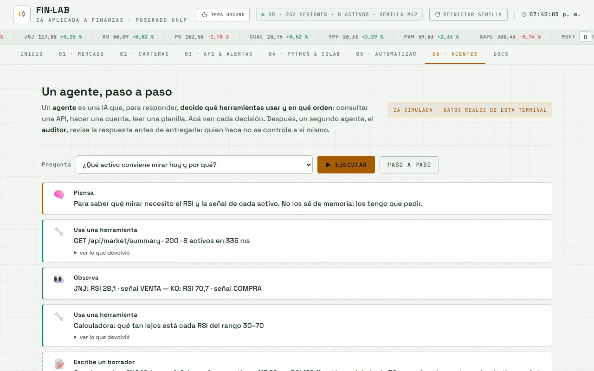

PASO 12 · LA IA QUE ELIGE SUS HERRAMIENTAS
El agente: la IA que decide qué hacer
Un prompt común contesta de una vez. Un agente elige una herramienta, mira el resultado y vuelve a decidir. Acá le dan dos herramientas reales —la API del curso y una calculadora— y lo dejan resolver una pregunta de cartera sin respuestas inventadas.
¿Les falta el paso anterior? El agente necesita la credencial probada y una decisión de modelo. VOLVER AL PASO 10 VOLVER AL PASO 11
Qué van a lograr
Un nodo AI Agent en n8n con un prompt de sistema, dos herramientas conectadas y un tope de pasos. Le preguntan algo que solo se puede responder consultando la API y el agente elige la herramienta correcta.
| PASO | QUÉ HIZO | RESULTADO |
|---|---|---|
| 1 | eligió HTTP Request a /api/market/summary | 8 activos, con RSI y señal |
| 2 | eligió Calculadora para comparar dos carteras | Sharpe de cada una |
| 3 | respondió con los números de la API | “Moderada, Sharpe 0,84” |
La traza es lo que hay que mirar: muestra qué herramienta eligió y en qué orden. Si no usó ninguna, no es un agente: es un prompt.
Así va quedando
- Esqueleto (ya está)
- Datos (ya está)
- Mercado (ya está)
- Indicadores (ya está)
- Carteras (ya está)
- API (ya está)
- Colab (ya está)
- n8n (ya está)
- #/guiado (ya está)
- Clave (ya está)
- Modelo (ya está)
- Agente (este paso)
- Consejo (todavía no)
- MCP (todavía no)

El prompt
PROMPT · PASO 12
Para configurar el agente y para pedirle ayuda si se traba.
Paso 12 de un taller de finanzas con n8n. Voy a configurar un AI Agent. Ayudame a escribir el prompt de sistema con estas reglas: - solo puede responder con datos que traiga de una herramienta; si no los tiene, dice que no los tiene - tiene dos herramientas: GET /api/market/summary (los 8 activos con precio, RSI y señal) y una calculadora - para comparar carteras usa la calculadora; para precios y señales usa la API - no puede dar consejos de inversión: describe los datos y las métricas - máximo 6 pasos; si no alcanzan, responde lo que tiene y aclara qué faltó Después decime qué tres preguntas de prueba muestran si el agente eligió bien las herramientas, y qué mirar en la traza para saberlo.
Puente con el proyecto real: el agente de la pestaña 06 · Agentes de la terminal está guionado, pero consulta la API real. Cuando le conectan un modelo con la credencial del paso 10, pasa a decidir de verdad. El prompt de sistema es lo que mantiene ese cambio bajo control.
Qué hacer, clic por clic
- Agreguen un nodo AI Agent y conéctenle la credencial del paso 10 y el modelo elegido en el paso 11.
- Peguen el prompt de sistema en el campo correspondiente, antes de conectar herramientas.
- Agreguen la herramienta HTTP Request apuntando a /api/market/summary de su terminal publicada.
- Agreguen la calculadora (o un nodo Code que haga las cuentas de Sharpe) como segunda herramienta.
- Pongan el tope de pasos en 6 y guarden.
- Pregunten algo concreto: “¿cuál de las tres carteras tiene mejor Sharpe hoy?” y abran la traza.
- Repitan con una pregunta imposible (“¿cuánto va a valer AAPL mañana?”) y comprueben que no inventa.
Cómo comprobar
- Usó una herramienta: la traza muestra al menos una consulta a la API antes de responder.
- Los números coinciden: el precio y el RSI de la respuesta son los mismos que muestra la pestaña Mercado.
- No inventa: con la API caída o una pregunta sobre el futuro, aclara que no tiene el dato.
- Se detiene: la traza no pasa de 6 pasos y la respuesta final llega igual.
Si algo falla
¿Se trabaron después de tres intentos? Bájenlo a una sola herramienta y una sola pregunta. Si así funciona, el problema está en cómo el prompt de sistema elige entre las dos.
- Entra en un bucle: el agente repite la misma consulta. Bajen el tope de pasos y pidan en el prompt que no repita una herramienta con los mismos argumentos.
- Responde sin consultar: la herramienta no está conectada o el prompt de sistema no la nombra. Nombren la URL exacta en las reglas.
- La API devuelve 404: la URL de su terminal cambió. Pruébenla en el navegador antes de culpar al agente.
La idea, en un gráfico
Para entender más · cómo funciona y palabras nuevas
El flujo: cómo decide un agente
1
Lee la pregunta y las reglas
El prompt de sistema dice qué puede y qué no puede hacer.
2
Elige una herramienta
La API para precios y señales; la calculadora para las cuentas.
3
Lee el resultado
Si alcanza, responde; si falta un dato, vuelve a decidir.
4
Se detiene
El tope de pasos evita que el ciclo siga para siempre.